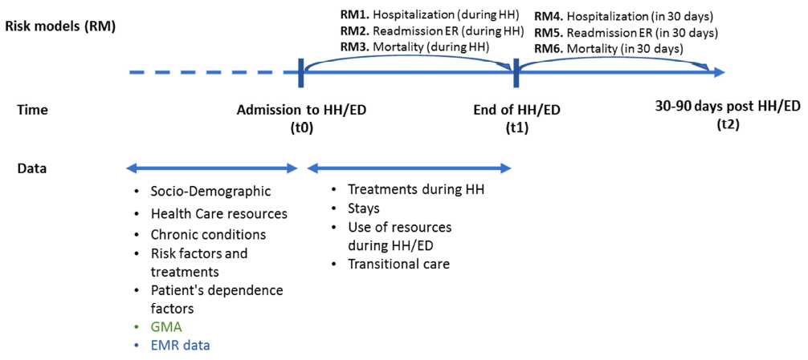

Blockchain-based Coordination:
why, how, gaps, prototype
Università di Modena e Reggio Emilia
Outline
- Why coordination "on the block"(chain)?
- How? Linda as benchmark
- Conceptual and technical gaps
- A prototype of pro-active Smart Contracts
Why?
The Blockchain provides highly desirable properties from a coordination standpoint:
- partial / total ordering of events
- adjustable consistency of replicated data
- accountability of actions
- identity management, non-repudiation, authentication
- (Byzantine) adjustable fault-tolerance
Name one which is NOT relevant to the Internet of Things vision, or distributed systems in general...
Why not :)
- can the Blockchain mediate interaction?
- amongst off-chain entities
- amongst on-chain entities
- amongst both
- amongst any combination thereof
- can the Blockchain act as a coordination medium?
- fixed coordination laws?
- application-level coordination laws?
How?
Let's use the archetypal Linda model as a benchmark!
- can the Blockchain implement Linda core abstractions?
- tuples
- templates
- matching
- tuple space
- primitives
- can the Blockchain preserve Linda essential properties?
- generative communication
- associative access
- suspensive semantics
- reference, time, space uncoupling
Which blockchain?
- "The" Blockchain is a blurred concept
- Depending on
- openness (permission-ed/less)
- access control (w.r.t. assets)
- architecture (clients, miners, ...)
- state model (how data is tracked)
- asset (money, ownership, ...)
- programmability (smart contracts, chaincode, ...)
- meta-primitives (deploy, invoke, ...)
- primitives (send, log, ...)
- consensus (degree of consistency / fault-tolerance)
- finitness (finite computations)
Ethereum
- Permissionless blockchain featuring Smart Contracts
- No access control, nodes are either clients or miners
- Any byte string can be the asset to keep track of
- Consensus via Proof-of-Work
- ETH cryptocurrency and Gas guarantee finite computations
Service Orientation
- "as-a-Service" paradigm to deliver software products
- roots in Service Oriented Architecture (~90s)
- well-known implementation: Web Services (~2000s)
- modern evolution: RESTful micro-services (~2010s)
- MLaaS growing trend
- i.e. IBM Watson ML, Amazon SageMaker, MS Azure ML Studio, Google Cloud ML Engine
- off-the-shelf solutions : wide portfolio of models, customisation options, user friendly
- lack focus on serving models (i.e. IBM MAX)
PMML / PFA
- Predictive Model Markup Language
- ML models representation format based on XML

- Portable Format for Analytics
- ML pipelines representation format based on JSON
independent development / deployment of predictive models
flexibility of production environment
co-existence of different programming languages and frameworks
Application
- Architecture implemented in CONNECARE European project
- Predictions about hospitalisations, emergency re-admissions, mortality
- Models created by partners with locally available data (6000+ patients with 5+ years follow-ups)
- DSS as precious asset to let clinical partners
- use and validate each other models
- cooperatively improve models without data sharing
- assess transferability
Risk Prediction
Home Hospitalisation (HH) / Early Discharge (ED)
- During HH / ED (t0) >> stratify patients to optimise care (Risk Models 1-3)
- risk of early readmission after hospital discharge
- risk of mortality
- after HH / ED (t1) >> stratify patients for transitional care (Risk Models 4-6)
- risk of early readmission after hospital discharge
- risk of mortality
Conclusion
Reference architecture for a DSS, promoting
- interoperability amongst technological environments
- collaboration between teams of data scientists, and towards clinical staff
State of art tech + ML standards = support to practical use cases
- service-orientation, REST architecture
- PMML and PFA data formats
Running implementation within CONNECARE
- clinical case studies ending after summer >> assessment of DSS efficacy
- CONNECARE ending Dec 2019 >> DSS released as open-source
Thanks
for your attention
Questions?
Università di Modena e Reggio Emilia